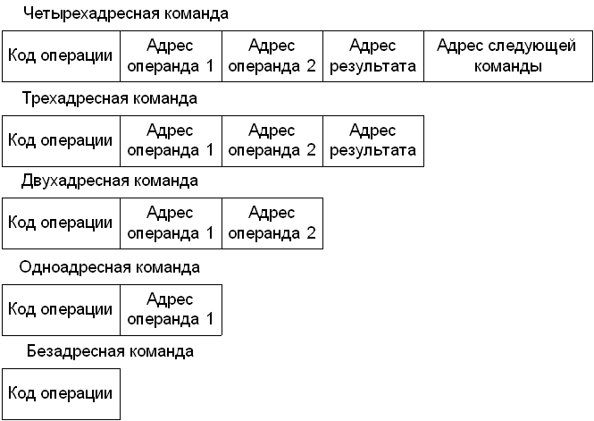
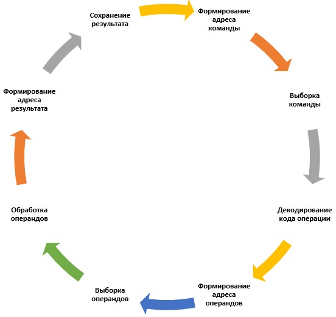
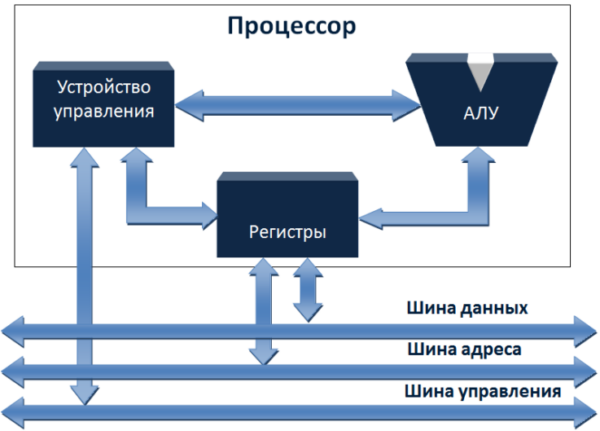
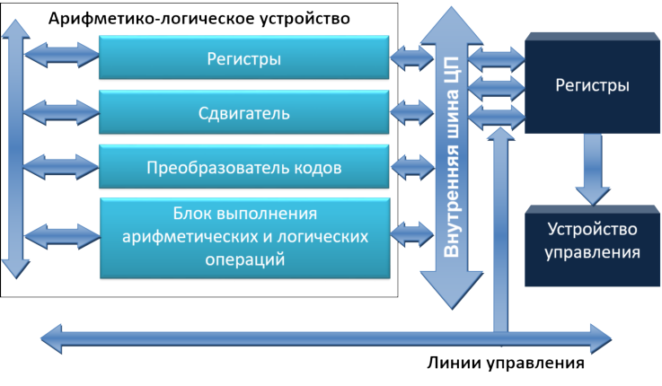

2.2. Порядок выполнения работы
2.4. Изучение структурно-функциональной организации процессора
2.4.2. Структурная организация ЦП
2.5. Контрольные вопросы и задания
Изучение принципов структурно-функциональной организации центрального процессора (ЦП) компьютера. Исследование функционирования ЦП при выполнении различных команд.
Студенты должны внимательно прочитать информационную часть работы, уяснить основные функции ЦП, обобщенную структурную схему ЦП и принципы взаимодействия его с остальными компонентами компьютерной системы, в частности, с оперативной памятью. Особое внимание следует обратить на организацию внутренней памяти процессора.
При выполнении второй части работы ("Моделирование") необходимо с помощью обучающей программы (../EXE/PC.exe) проанализировать структуру исследуемого процессора, выяснить назначение информационных связей, приведенных на схеме, и выполнить имитационное моделирование работы процессора при выполнении заданного набора команд (таблица 2.1). Этапы выполнения каждой команды должны быть детально проанализированы, построены структурные схемы алгоритмов и представлены в отчете.
| Вариант | Набор команд | ||
|---|---|---|---|
| 1 | MOV [Mem], [Reg] | NEG [Reg] | CMP [Reg], [Mem] |
| 2 | MOV [Reg], [Mem] | CMP [Reg1], [Reg2] | DEC [Mem] |
| 3 | ADD [Mem], [Reg] | OR [Reg], [Reg2] | MOV [Mem], [Reg] |
| 4 | DEC [Reg] | SUB [Reg], [Mem] | OR [Mem], [Reg] |
| 5 | INC [Mem] | SUB [REG1], [REG2] | MOV [Reg], [Mem] |
| 6 | MOV [Mem], [Reg] | NEG [Mem] | OR [Reg], [Mem] |
| 7 | MOV [Reg], [Mem] | AND [Reg1], [Reg2] | DEC [Mem] |
| 8 | ADD [Reg1], [Reg2] | CMP [Mem], [Reg] | INC [Mem] |
| 9 | DEC [Mem] | ADD [Reg], [Mem] | AND [Mem], [Reg] |
| 10 | INC [Reg] | SUB [Mem], [Reg] | AND [Reg], [Mem] |
Отчет по работе должен содержать цель работы, схему организации ЦП (из части "Моделирование") и ее описание, описание последовательности действий процессора при выполнении каждой из заданных для исследования команд, структурные схемы алгоритмов выполнения команд и выводы по работе.
При ознакомлении с организацией ЦП следует выделить его основные функции:
Функционирование ЦП опредляется последовательностью команд, которые он выполняет. Эти команды называют машинными командами или инструкциями. Набор различных инструкций, которые процессор способен распознать и выполнить, представляет собой систему команд данного ЦПУ.
Каждая команда должна содержать информацию, достаточную для ее корректного выполнения. Элементами команды являются:

Рисунок 2.1 - Форматы машинных команд
Очередная команда выбирается из ячейки оперативной памяти или (при наличии виртуальной памяти) считывается из вторичной памяти (магнитного диска). В большинстве случаев следующая команда, подлежащая выборке, располагается непосредственно за текущей. При этом отпадает необходимость в указании явной ссылки на следующую команду. Ссылка должна присутствовать в команде только тогда, когда требуется изменить последовательность выполнения команд.
Операнд-источник и операнд-приемник могут располагаться в одной из трех областей:
Команды в компьютере представляются последовательностью бит, разделенной на поля, соответствующие перечисленным элементам. Такое представление называют форматом команды. Так как двоичная форма, пригодная для использования в ЦП, неудобна для восприятия человеком, широко распространено символическое представление машинных команд. В этом случае коды операций представляются аббревиатурами, получившими название мнемоники. В таком же виде приводятся и ссылки на операнды.

Рисунок 2.2 - Командный цикл
Необходимо учитывать, что в компьютере имеется чрезвычайно большое количество ячеек оперативной памяти и (возможно) виртуальной, а также во внешних устройствах, где могут располагаться данные. В то же время, длина команд обычно крайне ограничена. Поэтому с целью достижения компромисса между диапазоном адресов, гибкостью и сложностью механизма адресации и разрядностью команд существует ряд способов адресации.
Очевидно то, что ЦП нуждается во временном хранении некоторых данных. Он должен знать местоположение последней команды, что позволит ему определить расположение следующей. При выполнении команды сама команда и обрабатываемые данные должны быть временно сохранены внутри процессора. Следовательно, процессор должен иметь внутреннюю память.

Рисунок 2.3 - Обобщенная структурная схема центрального процессора
На рисунке 2.3 представлена упрощенная схема ЦП и показана системная шина, посредством которой процессор связан с остальными компонентами системы. На основании такого интерфейса строятся системы с различными видами межсоединений компонентов.
Главными компонентами ЦП являются арифметико-логическое устройство (АЛУ, Arithmetic and Logic Unit - ALU) и устройство управления (УУ, control unit - CU). АЛУ непосредстенно выполняет вычисления (преобразование данных). Устройство управления реализует функции управления пересылками данных и команд в или из ЦП и управления операциями АЛУ. Кроме указанных блоков, на рисунке также показана внутренняя память небольшого объема, состоящая из ячеек, именуемых регистрами.

Рисунок 2.4 - Структурная схема центрального процессора
На рисунке 2.4 представлена более детализированная схема ЦП. На ней показаны линии передачи данных и линии управляющих сигналов, включая внутреннюю шину ЦП. Внутренняя шина предназначена для пересылки данных между различными регистрами и АЛУ, так как АЛУ, по сути, обрабатывает данные только из внутренней памяти процессора. На рисунке также приведены типичные базовые элементы АЛУ (сдвигатель, регистр флагов, преобразователь кодов, блок выполнения и логических операций).
Следует отметить два типа регистров ЦП:
При этом четкого разделения регистров на две эти категории обычно не наблюдается. Например, в большинстве процессоров программный счетчик (Program Counter - PC) является программно-доступным, а в некоторых - нет.
В различных системных решениях программно-доступные регистры можно разделить на группы:
Регистры общего назначения могут использоваться программистом для выполнения различных функций. В некоторых случаях имеет место их ортогональность к операциям, т.е. любой РОН может хранить данные для любой операции из системы команд. Это истинное использование РОНов. Однако чаще существуют ограничения, например, в случае выделенных регистров для операций с плавающей запятой.
Иногда РОНы могут использоваться в качестве адресных (косвенная регистровая адресация, адресация со смещением и т.д.), а вдругих случаях - наоборот, имеет место частичное или полное разделение на регистры данных и регистры адреса. Регистры данных служат только для хранения данных и не могут участвовать в формировании адресов. Адресные регистры могут быть частью регистров общего назначения или иметь четко выдленную адресную функцию:
Существуют определенные ограничения на длину регистров. Адресные регистры должны иметь разрядность достаточную для хранения максимального адреса. Регистры данных должны позволять хранить значения большей части типов данных. В некоторых компьютерах для представления чисел повышенной разрядности используются несколько регистров.
Регистры кодов условия, иногда называемые регистрами флагов, являются как минимум частично программно-доступными. Коды условия - это биты, устанавлиаемые аппаратными средствами ЦПУ по результатам операций. Например, арифметическая операция может сформировать положительный отрицательный илинулевой результат, а также вызвать переполнение. Коды условия обычно проверяются в процессе выполения операций условных переходов.
Биты кодов условия находятся в одном или нескольких регистрах. Обычно они формируют часть регистра управления. В общем случае, эти биты могут быть прочитаны специальной инструкцией, но не могут непосредственно изменяться пользователем.
К выполнению команды особое отношение имеют 4 регистра управления и состояния:
Программный счетчик содержит адрес команды. Обычно содержимое прогаммного счетчика обновляется ЦП после выборки очередной команды, таким образом, указывая на следующую команду, подлежащую выполнению. Команды переходов также модифицируют счетчик. Выбранная команда загружается в регистр команд, и производится анализ кода операции и спецификаторов данных.
Обмен данными с памятью осуществляется посредством MAR и MBR. В системах с шинной архитектурой MAR напрямую подключается к шине адреса, а MBR - к шине данных. При этом обмен с программно-доступными регистрами происходит через MBR.
Все структуры ЦП содержат один или несколько регистров, называемых словом состояния программы (program status word - PSW), которое обычно содержит код условия и некоторые статусные данные: